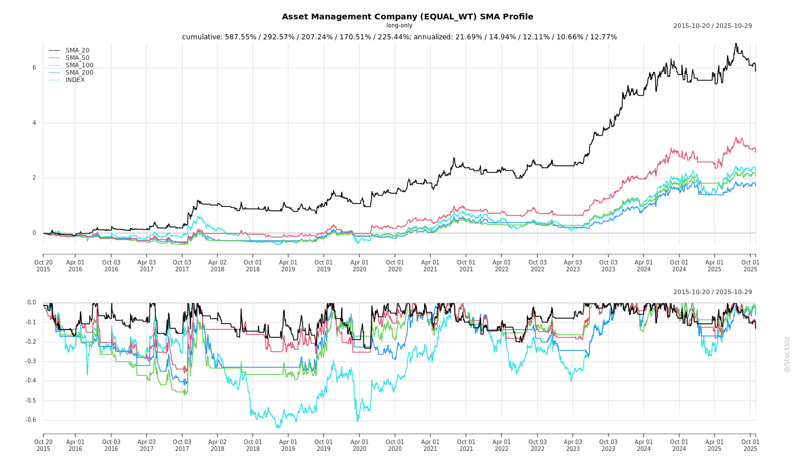
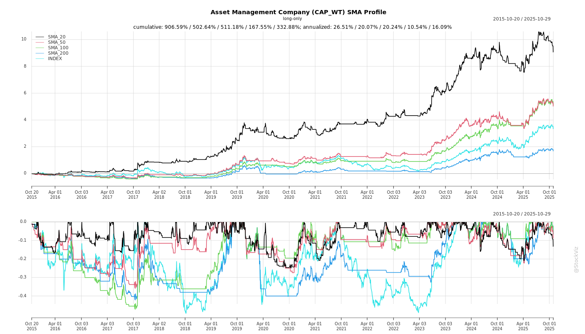

Cumulative Returns and Drawdowns
SMA Scenarios


Current Distance from SMA
EBIT (% of Industry Total)
Revenue (% of Industry Total)
AI Summaries
Analyst
asof: 2025-12-03
Summary Analysis: Indian Asset Management Companies (AMCs) Sector
Using the provided disclosures (investor/analyst meeting schedules from HDFC AMC, Nippon Life India AMC, Aditya Birla Sun Life AMC) and earnings transcripts (UTI AMC Q2/H1 FY26 and Canara Robeco Q2/H1 FY26 post-listing call), this analysis synthesizes insights for the Indian AMC sector. It highlights headwinds (challenges), tailwinds (supports), growth prospects (opportunities), and key risks. Data reflects resilient industry growth amid volatility, with AUM expansion (e.g., UTI MF AUM +10% YoY to ₹3.78 lakh cr; Canara Robeco QAAUM +12% YoY to ₹1.2 lakh cr), strong SIPs (industry record ₹29,361 cr in Sep 2025), and equity-heavy books (Canara Robeco 90:10 equity:debt).
Tailwinds (Positive Factors)
- Robust Retail & SIP Penetration: Industry folios at 25.19 cr (+ retail focus); SIP AUM ₹15.52 lakh cr (20.5% of total MF AUM), monthly inflows at record highs (e.g., UTI SIP inflows +17.7% YoY H1 FY26). B30 cities contribute ~19-80% AUM growth (e.g., Canara Robeco B30 AUM +10% YoY).
- Economic Resilience: India’s growth intact despite global volatility; steady infra spending, GST benefits, domestic demand. Equity markets recovered (Nifty +0.8% Sep 2025).
- Digital & Distribution Expansion: 41-92% gross sales digital (UTI/Canara Robeco); partnerships (Salesforce, ONDC); 27-75 branches; 53k+ empanelled distributors.
- Operational Efficiency: Core revenue growth (UTI +5% YoY Q2; Canara Robeco +11% H1); high opex margins (Canara Robeco 58-59%); VRS for rejuvenation (UTI: 479 eligible, avg. payout ₹60-65L).
- Investor Engagement: Proactive Reg 30 disclosures for conferences (e.g., Citi Financials Tour Dec 16, 2025 across HDFC/Nippon).
Headwinds (Challenges)
- Market Volatility & Flows Moderation: Equity inflows -9% MoM (Sep 2025); SIP stop ratio up to 76.3%; hybrid net inflows down (UTI H1: ₹4 bn vs. ₹19 bn prior year H2). Geopolitics/US tariffs impacting exports/manufacturing.
- Yield Compression: Telescopic slabs, distributor negotiations (e.g., Canara Robeco comfortable 30-40 bps; UTI equity/hybrid ~75 bps). Q-o-Q revenue dips despite AUM growth (Canara Robeco Q1-Q2 revenue -9%).
- Cost Pressures: Employee costs up (UTI: ₹25 cr family pension one-off + ₹6.5 cr actuarial); ESOPs planned (Canara Robeco 2% pool at IPO mid-price).
- Competitive Intensity: Sector/thematics hot (UTI cautious); performance cyclicality delays flows (2-3 yr lag for quartile upgrades).
Growth Prospects (Opportunities)
- AUM & Market Share Expansion: Industry AUM ₹75.61 lakh cr (+0.56% MoM); aspire 20-30% CAGR (Canara Robeco explicit; UTI via hybrids/digital). Equity/hybrid focus; low penetration (retail AUM ₹44.61 lakh cr).
- Product Innovation: New launches (UTI Multi Cap ₹1,576 cr; Aditya Birla conferences signal NFOs); NPS (UTI Pension AUM +16% YoY, 24.6% share); AIFs/SIFs/GIFT City (UTI Alternatives ₹2,669 cr); MSF schemes (PFRDA).
- Diversification: International (UTI USD 2.66 bn); alternatives/passives (UTI ETF/index inflows ₹4,848 cr); fintech APIs, auto-pay SIPs.
- Strategic Shifts: Leadership transitions (UTI: Vetri Subramaniam from Feb 2026); brand rejuvenation, women/youth literacy (UTI FLY: 6,700 students); post-VRS run-rate optimization.
- Post-Listing Momentum: Canara Robeco first call post-Oct 2025 listing; capital for tech/expansion.
Key Risks
| Regulatory |
SEBI consultation (potential 5 bps slab removal, certification for SIFs); telescopic expansion impacts yields. PFRDA changes. |
AMFI/SEBI feedback; focus core MF (Canara Robeco). |
| Performance & Flows |
Cyclicality (UTI growth schemes pick-up but value-oriented lag); redemption churn in hybrids/volatility. |
Hybrid push, distributor training; 3-yr performance focus (flows lag 2-3 yrs). |
| Operational/Cost |
VRS uncertainty (UTI: full impact Q3, tax amort. 5 yrs, higher 26-27% rate); ESOP dilution (2%). |
Workforce realign (UTI: hire 70-75 post-VRS); opex control (12-15% growth). |
| Market/External |
Geopolitics/trade wars; FPI outflows (UTI Intl. -8% H1). MTM volatility (skin-in-game ₹92 cr Canara Robeco). |
Conservative stress-testing; diversified AUM (86% retail). |
| Execution |
Digital competition (fintechs rethinking models); brand migration (Canara Robeco Robeco name post-ORIX). |
Tech investments (AI/ML); calibrated direct growth (28% AUM). |
Overall Outlook: Strong tailwinds from SIP/digital penetration outweigh headwinds, supporting 15-25% sector AUM CAGR. Growth hinges on performance, regulatory navigation, and cost discipline (post-VRS PAT normalization). Risks are manageable via diversification, but volatility could cap near-term multiples. AMCs like UTI/Canara Robeco positioned well via scale (UTI ₹22.42 lakh cr group AUM) and equity focus.
Financial
asof: 2025-12-01
Summary Analysis of Indian Asset Management Companies (AMCs) Sector
Based on Q3 & 9M FY25 financial results of key listed AMCs (Nippon Life India AMC/NAM India, Aditya Birla Sun Life AMC/ABSLAMC, UTI AMC), the sector exhibits robust growth amid strong mutual fund (MF) inflows and AUM expansion, but faces regulatory and tax pressures. Analysis covers tailwinds, headwinds, growth prospects, and key risks at an industry level.
Tailwinds (Positive Drivers)
- AUM & Market Share Growth: NAM India’s QAAUM at ₹5.7 Tn (+51% YoY), market share up 63 bps to 8.31% (highest gain among peers); equity share at 6.99% (+31 bps). Retail/HNI/B30 AUM surging (NAM: B30 at 20.4% vs industry 18.5%). Systematic flows at ₹99 Bn (+67% YoY), SIP book annualized ₹404 Bn.
- Revenue & Profitability Surge: Strong topline growth (NAM standalone revenue +39% YoY Q3 to ₹545 Cr; 9M PAT +32% to ₹956 Cr. ABSL +31% revenue YoY Q3; 9M PAT +23%. UTI 9M revenue +12%). Highest-ever quarterly operating profit for NAM (₹376 Cr, +50% YoY).
- Investor Base Expansion: NAM’s 20 Mn unique investors (38% market share, largest in industry). Digital transactions up (NAM: 4 Mn Q3, 73% of purchases).
- Diversification: AIF commitments (NAM ₹70 Bn), ETF leadership (NAM 18% share), PMS/advisory, international subs (all peers).
Headwinds (Challenges)
- Tax Regime Changes: Finance (No.2) Act 2024 removed debt MF indexation, raising DTL (NAM: ₹29 Cr hit in Q2; ABSL: ₹16 Cr). Pressured PAT in H1 FY25.
- Cost Pressures: Employee expenses up (NAM Q3 ₹93 Cr/+17% YoY due to ESOP grants ₹9.7 Cr; ABSL/UTI similar). Fee/commission & other expenses rising.
- Regulatory Scrutiny: NAM/SEBI show cause notice on MF scheme investments (no provision, but uncertainty flagged by auditors).
- Quarterly Volatility: UTI Q3 PAT flat/slight dip YoY; other income swings (e.g., NAM Q3 other income down due to lower fair value gains).
Growth Prospects (High Potential)
- Low MF Penetration: India AUM ~₹65 Tn (growing 30-40% YoY industry-wide); untapped retail/B30 markets, SIP culture (annualized flows >₹2 Tn industry).
- Equity Bull Run: Equity AUM share rising (NAM 51%); systematic flows resilient despite volatility.
- Strategic Initiatives: NAM’s GIFT City branch/FME license, new funds; ABSL/UTI ESOP expansions; IPO proceeds (NAM: partial deployment in branches/IT/marketing/AIF). International subs contributing (ABSL/UTI forex gains/losses).
- Projections: 9M PAT growth 20-30% across peers; full FY25 could see 25%+ industry AUM CAGR, driven by ₹20 Tn+ SIP book.
Key Risks
| Regulatory |
SEBI notices (NAM on investments); pending Social Security Code (PF/gratuity); LODR compliance (e.g., IL&FS peer subsidiary review delay). |
Provisions/fines; auditor emphasis of matter. |
| Market/Volatility |
Equity corrections, debt tax hit slowing hybrid flows. |
AUM/revenue sensitivity (60%+ revenue from MF fees). |
| Operational |
Rising ESOP/non-cash employee costs (NAM ₹27 Cr 9M); competition (20+ AMCs). |
Margin compression (opex ~30-35% of revenue). |
| Liquidity/Tax |
Debt MF shifts; DTL volatility on unrealized gains. |
PAT drag (5-10% in H1 FY25). |
| Execution |
IPO proceed delays (NAM ₹193 Cr unutilized); subs unaudited (UTI/ABSL minor reliance). |
Growth capex risks. |
Overall Outlook: Strong tailwinds from AUM/SIP momentum outweigh headwinds; sector poised for 20-25% profit growth FY25, but monitor regulations/tax. NAM leads on scale/share gains; peers catching up via retail focus. Investors should watch Q4 for sustained flows amid elections/volatility.
General
asof: 2025-11-30
Analysis of Indian Asset Management Companies (AMCs) Sector
Using the provided documents from key players like HDFC AMC, Aditya Birla Sun Life AMC (ABSLAMC), UTI AMC, Nippon Life India AMC, Canara Robeco AMC, and IL&FS Investment Managers (IIML), here’s a synthesized analysis of the Indian AMC sector. The insights are drawn from BRSR reports, financial results, regulatory filings, board changes, and compliance updates for FY25 and Q2 FY26. The sector demonstrates resilience amid growth, but faces regulatory and operational hurdles.
Tailwinds (Positive Factors Supporting Growth)
- Robust AUM and Retail Penetration: HDFC AMC reports 1.32 crore unique customers, 2.33 crore live accounts, and 13.2% individual investor market share (70% retail AUM). 81% AUM from top 30 cities, 19% from B30, signaling deepening penetration.
- Digital Transformation: 94% transactions digital (HDFC), reducing costs and enhancing efficiency. Investments in apps, WhatsApp bots, and cloud infrastructure (e.g., ABSLAMC capex on IT).
- Strong Financial Performance: ABSLAMC Q2 FY26 standalone revenue up 10% QoQ to ₹458 Cr, PAT ₹245 Cr; H1 PAT ₹522 Cr (up 10% YoY). HDFC’s turnover ₹3,498 Cr supports CSR applicability.
- ESG and Sustainability Focus: HDFC’s comprehensive BRSR (UNPRI signatory, Climate Action 100+), waste management (1.1T e-waste recycled), and CSR (cancer aid, education). Builds investor trust and attracts ESG funds.
- Investor Education Initiatives: HDFC’s SIP Saheli (5.1L women educated), 3,500+ awareness programs. Regulatory push (IEPF “Saksham Niveshak” by Nippon) aids compliance and retention.
- Diversity & Talent: HDFC: 28% women in workforce; Great Place to Work certified. Training: 73,700 hours.
Headwinds (Challenges Impeding Momentum)
- Regulatory Compliance Delays: IIML’s Q1 FY26 consolidated results delayed 3 months due to subsidiary (APUIAML) board unavailability (Govt. officials), leading to ₹2.65L fines and promoter demat freeze threats from NSE/BSE.
- Grievance Volumes: HDFC reports 2,042 customer complaints (9 pending); shareholders (7). Rising digital ops amplify cyber/data privacy risks.
- High Employee Turnover: HDFC permanent employee attrition at 12% (stable but notable); women at 64% retention post-maternity.
- Operational Dependencies: Consolidated reporting vulnerable to subsidiaries (e.g., IIML-APUIAML Govt. nominees unavailable).
- Cost Pressures: Employee expenses ~50% of opex (ABSLAMC H1: ₹188 Cr); finance/depreciation rising with expansion.
Growth Prospects
- Retail & SIP Boom: HDFC’s 24% MF investor share; SIP focus (“SIP se Sagargarh Banao”). Potential from 36 states/UTs coverage, B30 growth (19% AUM).
- Product Diversification: Mutual funds (99.5% turnover HDFC), PMS, AIFs, advisory. International: HDFC Dubai office (0.001% export revenue, scalable).
- Sustainability Edge: ESG integration (PRI, stewardship codes) attracts global capital; CSR in health/education/sports enhances brand.
- Tech-Driven Scale: 94% digital, AI bots, cloud apps reduce costs; ABSLAMC ESOP/PSU scheme signals talent retention for growth.
- Market Outlook: Projected AUM CAGR 15-20% (retail shift from FDs); policy advocacy via AMFI for reforms.
Key Risks
| Regulatory/Compliance |
Fines/freezes (IIML); IEPF unclaimed dividends (Nippon); BRSR assurance mandatory. |
Timely disclosures (Reg 30); whistleblower policies; ISO 27001 cyber certs. |
| Cyber/Data Privacy |
High digital reliance; HDFC material risk (2% complaints). |
Cyber committees, training; fraud prevention policies. |
| Operational |
Subsidiary delays; branch-dependent (HDFC 280 offices). |
BCP/DR plans (ISO 22301); vendor audits. |
| Market/Financial |
AUM volatility, competition; Scope 1+2 GHG up (HDFC: 3,464 tCO2e). |
ESG monitoring, risk mgmt. committees; diversification. |
| People |
Attrition (12%); POSH/discrimination complaints (low but monitored). |
DE&I policies; 98% training coverage; wellness spends (0.18% revenue). |
| Reputational |
Grievances, ethical lapses. |
Stewardship codes; 100% ethics training. |
Summary: Indian AMCs benefit from retail/digital tailwinds and ESG tailwinds, with strong growth prospects from SIP penetration and tech scale (AUM/margins expanding). However, headwinds like compliance delays (e.g., Govt.-linked subsidiaries) and rising grievances pose near-term risks. Key focus: Robust governance, cyber resilience, and subsidiary alignment to sustain 15-20% sector growth amid SEBI scrutiny. Overall outlook positive with proactive risk management evident.
Investor
asof: 2025-12-03
Summary Analysis: Indian Asset Management Companies (AMCs) Sector
Using the provided disclosures and earnings transcripts from HDFC AMC, Nippon Life India AMC, Aditya Birla Sun Life AMC, UTI AMC, and Canara Robeco AMC (as of Q2/H1 FY26, ending Sep 2025), the analysis highlights sector dynamics amid resilient growth, regulatory scrutiny, and market volatility. The sector benefits from structural retail SIP inflows but faces yield compression and competition. Below is a structured breakdown of headwinds, tailwinds, growth prospects, and key risks.
Tailwinds
- Robust Retail SIP Momentum: Industry SIP inflows hit record Rs. 29,361 Cr/month (Sep 2025) with 9.25 Cr active accounts; SIP AUM at 20.5% of total MF AUM (Rs. 15.52 lakh Cr). AMCs like UTI (SIP inflows +17.7% YoY to Rs. 4,599 Cr in H1) and Canara Robeco (21 lakh SIP accounts, Rs. 768 Cr monthly SIP+STP) emphasize SIP as a growth cornerstone, with B30 cities contributing ~19-80% of AUM.
- AUM Expansion: Industry QAAUM at Rs. 75-77 lakh Cr (+16% YoY); individual AMCs report 6-11% YoY AUM growth (e.g., UTI Rs. 3.78 lakh Cr MF AUM, Canara Robeco Rs. 1.18 lakh Cr). Equity/hybrid focus (90:10 mix) drives this, supported by 25 Cr+ folios.
- Digital & Distribution Push: 41-92% gross sales via digital (UTI); partnerships (Salesforce, ONDC); 27-75 branches; 53k+ empanelled distributors. Investor education (e.g., UTI’s FLY program: 6,700+ students) boosts adoption.
- Diversification: Growth in pension (UTI Pension AUM +15.8% YoY to Rs. 3.89 lakh Cr), alternatives (UTI Alt Rs. 2,669 Cr), and international (UTI Intl USD 2.66 Bn). Post-listing visibility (Canara Robeco) aids capital access.
- Cost Discipline: Operating leverage emphasized; UTI VRS for 479 employees (~1/3 workforce) targets efficiency; Canara Robeco opex +12-15% guidance with 58-59% margins.
Headwinds
- Market Volatility & Flows Caution: Geopolitical tensions, US tariffs slowed equity inflows (-9% MoM to Rs. 30,422 Cr in Sep); SIP stoppage ratio up to 76%. UTI hybrid net inflows dipped (H1 Rs. 4 Bn vs. H2 FY25 Rs. 19 Bn).
- Yield Compression: Telescopic slabs erode margins (all AMCs impacted equally); distributor negotiations prioritize volume over yield (Canara Robeco comfortable at 30-40 bps, UTI equity/hybrid ~75 bps). Q-o-Q revenue dips (e.g., Canara Robeco Rs. 121 Cr to Rs. 110 Cr despite +10% AUM) due to lower-commission flows.
- SIP Market Share Erosion: UTI SIP share dipped to 2.7% (Sep); conservative stance on thematic/sectoral funds costs share vs. peers.
- Regulatory Scrutiny: SEBI consultation on removing 5 bps slab for large AMCs; new product certifications (e.g., SIF) limit distribution readiness.
- One-offs & Costs: UTI family pension revision (Rs. 25 Cr hit); salary/actuarial impacts; VRS payouts (avg Rs. 60-65 lakhs/employee, full Q3 charge).
Growth Prospects
- SIP & Core Equity Share Recovery: Focus on hybrid/multi-asset (UTI aggressive hybrid, balance advantage); 3-yr performance ramps to unlock platforms/ratings (lead time 2-3 yrs per UTI). Target 20%+ AUM CAGR (Canara Robeco aspiration).
- Product Innovation: NFOs (UTI Multi Cap Rs. 1,576 Cr AUM; Canara Robeco Banking/Financials, Innovation); NPS MSF schemes (UTI); SIF/AIF/passives/GIFT City exploration.
- Strategic Initiatives: Workforce rejuvenation (UTI VRS shifts sales ratios); brand refresh (younger cohorts); B30/digital scale (80% UTI AUM from B30); intl/alternatives diversification (higher yields).
- Financial Outlook: Normalized PAT growth (UTI standalone +13% YoY ex-one-offs to Rs. 241 Cr H1); operating income +11-20% YoY. Post-VRS run-rate clarity in Q3; ESOPs marginal FY26 impact.
- Sector Penetration: Retail folios at 19.77 Cr; private NPS expansion via flexible products.
Key Risks
| Performance Cyclicality |
2-3 yr cycles impact flows; value/growth schemes lag short-term. |
Diversified portfolios; stress testing (Canara Robeco); hybrid focus. |
| Regulatory Changes |
Expense ratio slabs; SIF/NPS certifications delay launches. |
Feedback via AMFI; phased compliance (e.g., UTI SIF training). |
| VRS/Operational Costs |
Rs. 25-300 Cr+ one-offs (UTI); tax amortization over 5 yrs raises effective rate to 26-27%. |
Rejuvenation benefits; opex control (2.5-3% normalized growth). |
| Distribution Dependency |
86% retail AUM; fintech churn; thematic fund conservatism loses SIP share. |
Training, API integrations; direct channel growth (28% AUM). |
| Market/External |
FPI outflows hit intl arms (UTI -8% H1); M2M volatility in skin-in-game (Rs. 92 Cr+). |
Domestic focus; conservative fixed income/liquid bets. |
| Transition Risks |
Leadership handovers (UTI Feb 2026); post-listing brand alignments (Canara Robeco Robeco name). |
Experienced successors; 5-yr bank stake window. |
Overall Outlook: Strong structural tailwinds from SIP penetration and digitalization support 15-20% sector growth, but headwinds like yields and regulation cap near-term PAT expansion (5-10% normalized). AMCs prioritizing scale, performance, and efficiency (e.g., UTI/Canara Robeco) are best positioned; monitor Q3 VRS outcomes and Dec 16 investor meets (Citi Tour) for flow catalysts. Risks are manageable via operating leverage, but execution on SIP share and products is critical.
Meeting
asof: 2025-11-30
Summary Analysis of Indian Asset Management Companies (AMCs) Sector
Based on the provided documents from key players (HDFC AMC, Nippon Life India AMC, Aditya Birla Sun Life AMC, UTI AMC, Canara Robeco AMC, and IL&FS Investment Managers), here’s a synthesized analysis of headwinds, tailwinds, growth prospects, and key risks. These reflect sector trends amid robust equity markets, regulatory oversight, and post-IPO activities.
Tailwinds (Positive Factors)
- Strong Shareholder Support & Corporate Actions: Overwhelming approvals for bonus shares (HDFC: 97.5% favor), ESOP schemes (Aditya Birla, Canara Robeco), and director appointments (UTI: near-unanimous). Signals confidence and alignment with shareholders.
- Robust Financial Performance: Nippon reported record Q2 operating profit (₹419 Cr, +15% YoY), PAT ₹345 Cr (-4% YoY but resilient), AUM ₹6.57 Tn (+20% YoY), equity market share +17 bps to 7.13%, and SIP flows +19% YoY. Dividend declarations (Nippon ₹9/share; IL&FS ₹0.50/share).
- Talent Retention Focus: New ESOP/PSU schemes (Aditya Birla: 2% of equity; Canara Robeco ratification) to motivate employees amid competitive talent wars.
- Market Momentum: High SIP inflows (Nippon: ₹107 Bn Q2), B-30 penetration, and digital transactions (75% of purchases) support retail growth.
Headwinds (Challenges)
- Regulatory Scrutiny: SEBI show-cause notices (Nippon: investment compliance issues, settlement ongoing; no provisions made). SFIO probe into IL&FS group creates uncertainty.
- Revenue Pressure: Fund terms nearing end (IL&FS: reduced fee/project revenue; Nippon notes uncertainty). Nippon’s Q2 revenue dipped QoQ; IL&FS reports material going-concern doubts due to low inflows.
- Dilution & Costs: Bonus issues (HDFC) and ESOPs dilute EPS; rising employee/legal expenses (Nippon H1: +16% YoY).
- Subsidiary Delays: IL&FS unable to consolidate Q2/H1 results due to subsidiary (APUIAML) delays.
Growth Prospects
- AUM & Market Share Expansion: Nippon’s fastest top-10 AMC growth (H1 FY26); HDFC’s bonus signals capital appreciation potential. Equity (47.6% of AUM) and ETF dominance (19.8% share) poised for SIP-led inflows.
- Strategic Moves: Post-IPO stability (Nippon, Canara Robeco); promoter rights (Canara Robeco) for governance; leadership extensions (Nippon CEO 5-year term).
- Digital & Retail Shift: 1-in-3 MF investors with Nippon; B-30 AUM +15% YoY. Potential from AIFs (Nippon: +30% commitments) and international expansion.
- Outlook: Sector benefits from ₹50 Tn+ industry AUM; equity bull run could drive 15-20% YoY growth for leaders like Nippon/HDFC.
Key Risks
- Regulatory/Litigation (High): SEBI probes (Nippon), SFIO investigations (IL&FS: qualified audits, unquantifiable impact). Promoter rights post-listing (Canara Robeco) may face governance scrutiny.
- Going Concern & Revenue Volatility (Medium-High): IL&FS flags material uncertainty (low fees, no new funds); dependency on legacy fund extensions.
- Market & Operational (Medium): Equity concentration risks downturns; talent attrition without ESOPs; subsidiary delays (IL&FS).
- Dilution/Execution (Low-Medium): Bonus/ESOPs (HDFC/Aditya Birla) pressure EPS; unutilized IPO proceeds (Nippon).
Overall Sector Outlook: Positive for established players (Nippon/HDFC) with AUM/share gains outweighing regs; Cautious for stressed ones (IL&FS). Growth hinges on regulatory resolutions and sustained retail inflows. Investors should monitor SEBI outcomes and fund renewals.
Press Release
asof: 2025-11-30
Analysis of UTI Asset Management Company Limited (UTI AMC)
UTI AMC, one of India’s oldest and largest asset managers (Group AUM: ₹22.42 lakh crore as of Sep 2025), operates in a high-growth mutual fund industry (industry MF QAAUM: ₹77.14 lakh crore, +16.49% YoY). Its UTI MF QAAUM stands at ₹3.78 lakh crore (+10.47% YoY), with strengths in passive products (13.15% market share), NPS (24.62% share), and B30 penetration. Financials show resilient core growth (H1 FY26 consolidated core revenue +8% YoY to ₹769 cr; normalized core PAT +1% YoY to ₹248 cr), despite one-time costs. Insights from Nippon Life India’s GIFT City ETF feeder fund highlight industry trends like foreign inflows and tax incentives. Below is a structured summary of tailwinds, headwinds, growth prospects, and key risks.
Growth Prospects (Future Opportunities)
- Penetration in Underserved Segments: B30 cities (underpenetrated at 19% industry AUM); first-time investors (esp. women via SEBI push); target 698 districts → nationwide scale.
- Product Diversification: Expand passive/ETFs (11.93% YoY growth), AIFs (new SDOF IV, GIFT City FoFs USD 200 mn), NPS/international. Nippon-like feeders for Japanese/foreign capital.
- Digital & Tech-Led Expansion: 94% online gross sales; Salesforce personalization, WhatsApp/chatbot; API for partners → cross-sell/upsell.
- AUM Trajectory: SIP cornerstone (long-tenure book + growth); industry flows → UTI targets 5%+ share; group AUM +11% YoY sustainable via subsidiaries.
- ESG & Sustainability: UNPRI signatory; high ESG ratings (CRISIL 64.1/100); embed in investments for global appeal.
Key Risks (Potential Threats)
| Market/Volatility |
Equity-heavy AUM (69%); M2M fluctuations (-91% Q2). |
Diversified mix (passive/NPS); stress testing. |
| Regulatory/Competition |
SEBI changes (e.g., expense ratios, incentives); peers gaining share. |
Strong governance (4/7 independent directors); niche leadership. |
| Operational/Costs |
Rising employee expenses (+26% YoY); cyber risks. |
Digital automation (96% same-day processing); ISO 27001 certified. |
| Flows Dependency |
Redemptions in volatility; B30 stickiness but low absolute scale. |
SIP focus (1.36 cr folios); multi-channel distribution (~75k MFDs). |
| Subsidiary/Geopolitical |
International AUM dip (UTI Intl. loss ₹18 cr); forex/Japan exposure (Nippon-like). |
Hedged treasury (₹3,860 cr investments); diversified clients (30+ countries). |
Overall Outlook: UTI AMC is well-positioned for 10-15% AUM CAGR amid industry boom, leveraging B30/digital/NPS strengths. Normalized core earnings growth (8-13% YoY) supports dividends (39-66% payout). Risks are manageable via diversification, but equity volatility and competition warrant monitoring. Nippon’s initiative signals tailwinds from GIFT City/foreign flows, potentially replicable.
Copyright © 2023 SAS Data Analytics Pvt. Ltd. All rights reserved.
🐞